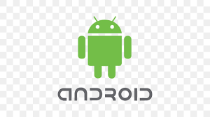

Historia da apple
Um trio de amigos reunido em uma garagem, mesmo sem saber, estava iniciando algo que revolucionaria a tecnologia. Steve Jobs, Steve Wozniak e Ronald Wayne começaram a produzir computadores em miniatura e assim surgiu a Apple no dia primeiro de abril de 1976, em Cupertino, no Vale do Silício que existia na Califórnia. O primeiro computador colocado no mercado foi o Apple I, feito por Wozniack. A empresa só decolou na verdade, em 1977, quando o Apple II foi apresentado em uma feira de informática. Em 1980, quando lançaram o Apple II, a empresa começou a explorar o mercado internacional. Em sequência, nessa mesma década estavam passando por uma grande crise, quando Wozniack sofreu um acidente aéreo e Steve Jobs assumiu como CEO. Nesse meio tempo, Steve saiu da empresa e voltou somente em 1996 quando a Apple estava à beira da falência. A partir daí começaram a ser lançados produtos e programas que revolucionaram a situação e criaram a oportunidade da marca ser a potência atual. Ali criaram o iMac que chamou a atenção do público jovem, iPod que proporcionava levar músicas a todo lugar, iPhone um smartphone com super funcionalidades e entretenimento e o iPad com a era dos tablets fáceis de levar para onde quisesse. A empresa também lançou o iTunes, um player que armazenava, organizava e sincronizava músicas a outros aparelhos. Com o passar do tempo novos produtos foram lançados e cada vez mais as pessoas aderiram a marca. A Apple é mundialmente conhecida e está em todos os cantos, mesmo depois da morte de Steve em 2011.
Historia do Android
Em 2003,Andy Rubin, Rich Miner, Nick Sears e Chris White, empresários do ramo da tecnologia, fundaram a Android Inc., originalmente como um sistema inteligente pensado para inovar o mercado de câmeras digitais. Porém, devido à amplitude do mercado, que não era favorável na época, o foco se voltou para o mobile. Nessa época, quem dominava o mercado de celulares era o sistema operacional Symbian, da Nokia. O grande problema para os fundadores do Android continuarem competindo foi a falta de investidores para levantar dinheiro e seguir sua expansão. Dois anos depois, em 2005, a Android Inc. foi comprada pela gigante de tecnologia Google, que estava adquirindo pequenas startups e marcas em destaque – como o Youtube – e junto dessa aquisição, nasceu a Google Mobile Division, departamento voltado exclusivamente para pesquisa em tecnologia móvel.
primeiro Android
Após a aquisição pela Google, o sistema Android passou por desenvolvimento interno, e, em conjunto com várias marcas conhecidas como a Samsung, LG e Motorola, foi lançada uma plataforma mobile única e open source (com código aberto para o público, ou seja, todas as pessoas podem vê-lo, modificá-lo e alterá-lo para melhorias). O primeiro celular com o sistema operacional Android foi lançado oficialmente em 22 de outubro de 2008 pela fabricante HTC Dream e o seu modelo foi chamado de T-Mobile G1. Ele foi lançado para competir diretamente com o Symbian, BlackBerry, Windows Mobile e com os novos celulares da Apple, que na época estava na segunda geração do iOS.